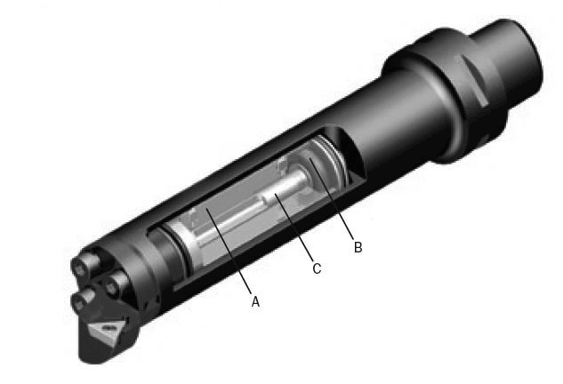

Расточка отверстий большого диаметра или отверстий большой глубины, особенно в сочетании этих двух факторов, требует специальных инструментальных решений и комплексного подхода к повышению жесткости системы СПИД. В дополнение к обычным требованиям, таким как максимально возможный диаметр расточной оправки, обеспечение надежной эвакуации стружки, выбор острокромочной позитивной режущей геометрии, главного угла в плане близкого к 90 градусам и малого радиуса при вершине, может потребоваться использование оправок с особыми свойствами. Расточные оправки для глубоких отверстий должны обладать демпфирующими свойствами, чтобы препятствовать возможному возникновению вибраций независимо от вида используемых режущих головок. Это свойство приобретает особую важность, когда необходима высокая точность и качество поверхности.
Жесткость крепления оправок является решающим фактором успешной работы с большим вылетом. Нужно обеспечить большую площадь контактной поверхности. При обработке с вылетом около 10 диаметров и более используются конструкции оправок со встроенным демпфером или с усиленным твердосплавным хвостовиком. Иногда эти конструктивные элементы комбинируют в одной оправке.
Основной деталью конструкции встроенного демпфера является инерционное тело, выполненное из материала с высоким удельным весом (c). Оно упруго подвешивается в полости оправки на двух резиновых втулках (в) в максимальной близости к ее переднему концу. Все свободное пространство внутри полости оправки заполнено специальной вязкой жидкостью (а). В случае возникновения колебаний при обработке, инерционное тело приходит в движение. Настройка частотной характеристики системы такова, что колебания конца оправки и инерционного тела находятся в противофазе, и их энергия эффективно поглощается. Как результат вибрации сводятся к минимуму, что позволяет повысить производительность обработки.
Твердосплавный хвостовик при равных геометрических параметрах обеспечивает в три раза меньший прогиб под действием сил резания благодаря более высокому модулю упругости материала.
Антивибрационные свойства твердосплавных оправок повышаются и из-за большей массы по сравнению со стальными. У оправок небольшого размера твердосплавный хвостовик изготавливается цельным. В оправках большего размера он может набираться из отдельных твердосплавных колец, стянутых стальным центральным стержнем.